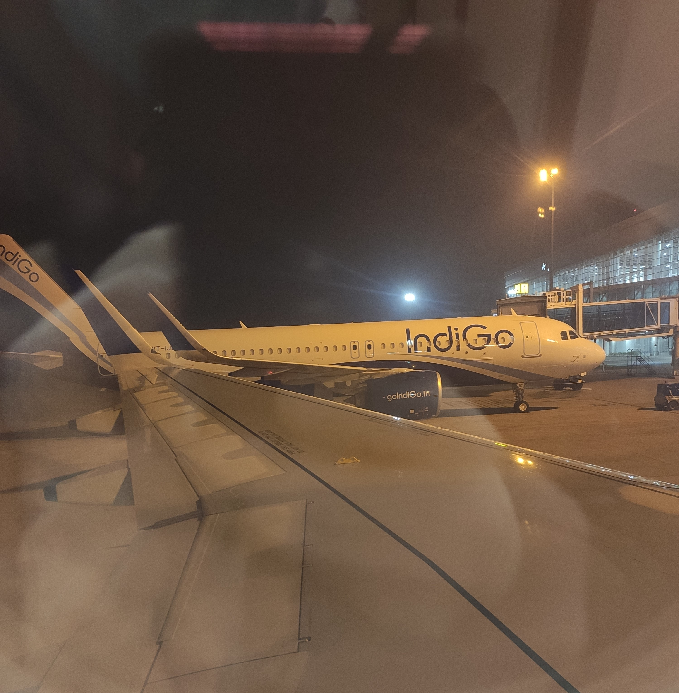
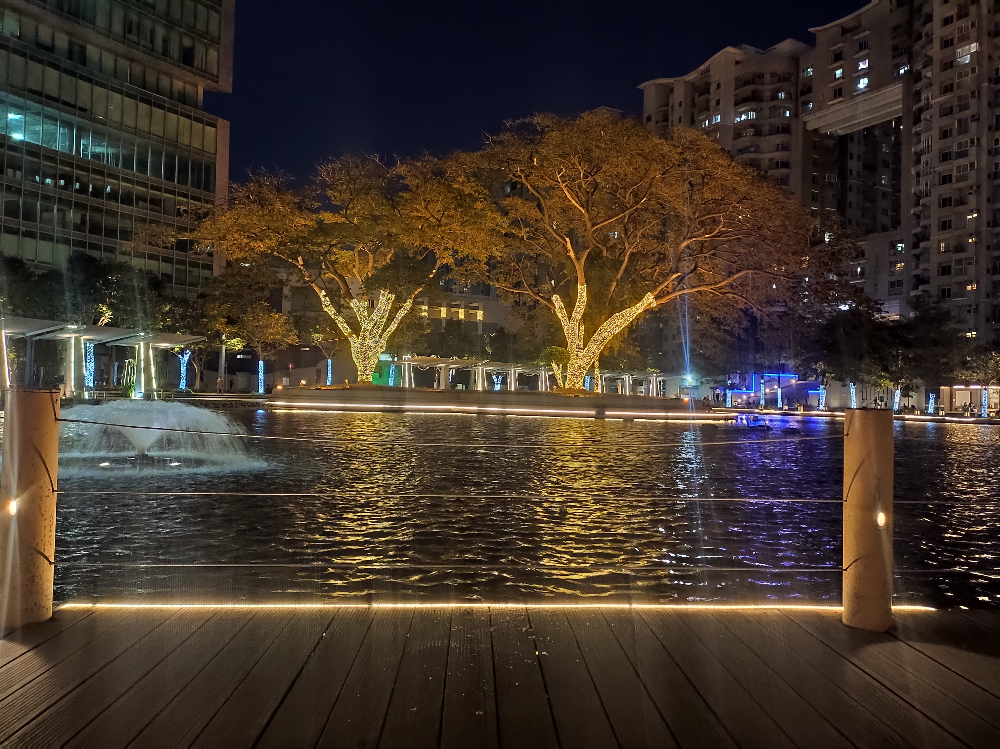
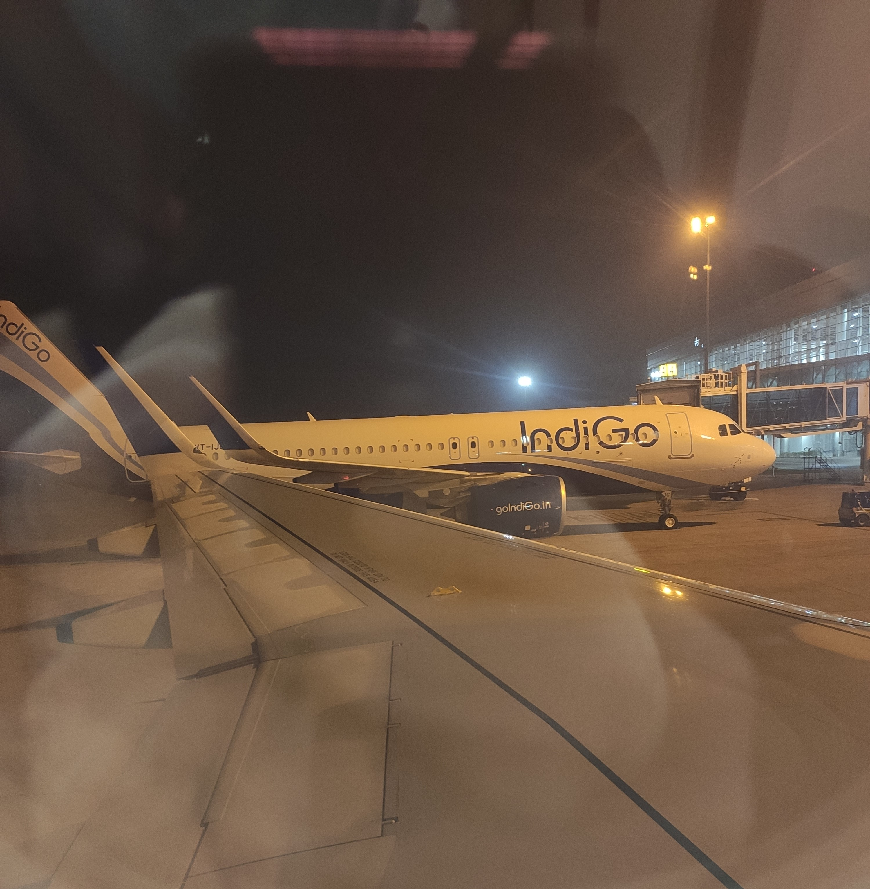
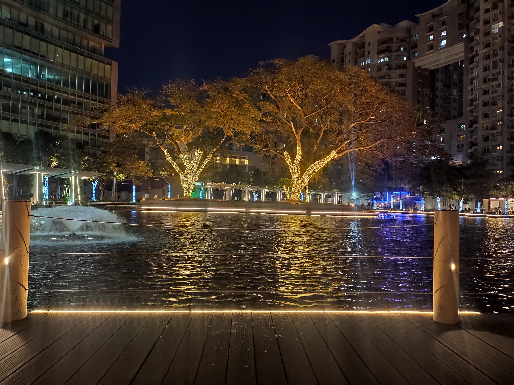

How, Why, and Where I decided to become a Front End Developer.
So finally on the journey to becoming a front-end developer. I have decided to share things about my journey. This is especially for those who are not from Computer Science Branch. It might take few minutes to read!
I was in the 8th semester of my Bachelor's of engineering. And working on my final semester project, since our finals were on hold due to Pandemic. I had already decided I was going to shift my career to IT. I was never afraid of risks, so I decided, let's do it. And I started giving interviews for any job which will help me move out of my hometown since the internet services were barred for more than 12months.
In the last couple of weeks, I was fully occupied with interviews and finally, I got a job in Concentrix as senior representative operations, Bangalore. But I was stuck as my exams were on hold. However, on16 November 2020, I started my journey in Concentrix with the full intention to find my path to IT. I was not among the ones who give up.
Last week of November and our date-sheet was out, my project viva was on 7th December and somehow my Concentrix assessments were on the same day as well. Luckily, I had another phone, So I attended both the exam viva and assessments together.
I gave the exams and cleared assessments as well. Guess what I did next? Booked my air tickets the same day and the next day, I landed in Bangalore. This was the first time, I was traveling like this, but I had plans. ps: we must take some risks, get out of our comfort zone.
The first week was amazing in Bangalore, the wind, people, I loved everything about it. And the first two months of training went fast. Setting up everything, place to live, exploring things, and kind of settling down. Meanwhile, I travelled on new year's eve as well with my amazing roommates.
 



I started learning python, Object-Oriented Programming concepts to check things out. I liked it in the beginning but felt something was missing. A week later, I qualified for a one week workshop at amazon Columbia and it was about machine learning, Apache, AWS, Hadoop. I did my assignments and it was a good learning experience but once again something felt missing.
We were at the office and I was working as usual and made some amazing friends as well as networks. Since my process was Adobe, we usually have to open Adobe websites and I was amazed to see them. How Adobe Developers makes so simple yet so amazing design and fast websites for their products. So I started to search how it was made and for the first time, things felt good. It was the moment, I knew, I wanted to be a front-end developer.
I started using the w3schools website during my free time at the office and casually read about things and skills required to be a front-end developer. Things were overwhelming and I had no chance to study, my shifts were changed and my sleep cycles were disturbed. I had a laptop that had obsolete specifications and could have never survived an IDE, lol. I worked hard for this month, got some incentives, and ordered a laptop with good specifications and till then used to read things, no practice and finally, I resigned at Concentrix.
I quit my job, had my laptop with me, and took online videos and material, like everyone who wants to learn will do, and fell into a small trap called "tutorial hell". The lockdown was implemented strictly so guess what I did next? Came back to my hometown the next day. And started learning HTML, took my time with it. Read about tags and details. And practiced a bit.
A month passed away and I had a decent knowledge of HTML, CSS. I now started Javascript basics, like variables, objects, scope, hoisting, dom manipulation, etc but still lacked a proper direction.
One lucky day, I found about neoGcamp, and as soon as I saw the point table system, the way it was made, and completely, I started the journey. I made my portfolio and now I am learning Vanilla Javascript. And looking forward to elevating my skills in Level One.
The challenges did not end here for me, the internet shutdown still is in my way. I have written this blog in an internet shutdown, I had no access to the Repl, Codesandbox, or even course videos after mark 8 for days. But here, I am writing my two blogs and practicing old things. My portfolio might be submitted late, I might not get selected. But the thing that kept me moving was "I will become a front-end developer irrespective of the challenges".
My advice to all new fellow developers out there!
It can be hard to find a proper plan of action but believe me if you search and put your efforts, you will find great experienced mentors out there, like Tanay Sir, who put the best plans and courses for you. All you need is commitment and dedication.
Don't run after multiple languages, pick one and try to get your hold on it. And practice and practice.
Feel free to talk about it if you are stuck. There are so many big and amazing communities. Learn to research on the internet how to do it, rather than finding a direct solution or video. You will learn a lot.
It does not matter from which stream you are, all that matters is what you want to be. Great things take time, it might take 6 to 9 months, but you will be at a better place.
Coding can be overwhelming and hard. you will face challenges. I did not have a laptop, but I had a will to make things happen for me. I might not have internet for days, but I use that time to practice what I learn earlier. So the only thing that can come between you becoming an amazing developer is you. Only you can stop yourself, the problems will only make you stronger. Never give up.
I still have a lot to learn and explore, but I used this opportunity to tell everyone. Never give up. You can do wonders. People will tell things and suggestions. But in the end, it's you who has to sit and code for hours and make it happen. We need to dedicate 3-4 hours per day if we are working else code for as much time we can and the best thing is we are allowed to make mistakes, learn and grow.
PS: I had amazing support from my family, roommates, and few friends and I am forever grateful for that.